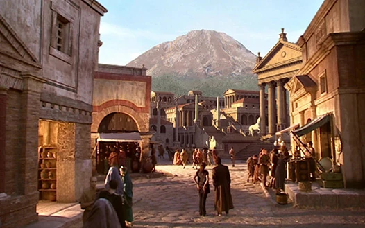

Upcoming Event
See Pompeii before the volcano!
Before Mount Vesuvius erupted, Pompeii was a thriving city. Come see what life was really like in this ancient Roman city!
Calendar
Victorian England
Ever wondered what life in England was like under the rule of Queen Victoria? Come find out and wonder no more!
Sun Watch Party
In the distant future, the sun will eventually die and blow up. Join the future residents of Earth in a watch party to see it happen!
Ancient Egypt
Egypt has some rich history. Come on a month long trip to see all of the major events in Ancient Egypt!
Weather

Temperature: 59
Windspeed: 1
Windchill: ???
Spotlight
Rose Tyler
Companion to both the Ninth and the Tenth Doctors, Rose Tyler had the most impact on the Doctor after his previous war-torn regeneration left him without compassion.
Amy Pond
Being the mother of the woman who marries him (that's what happens when time travel gets involved), Amy Pond has the most history with the Doctor. She was the main companion of the Eleventh Doctor, going on many adventures with him and knowing of him since she was a little girl.
Clara Oswald
Clara was companion to the Eleventh and Twelfth Doctors, and played a big role in protecting the Doctor from danger.